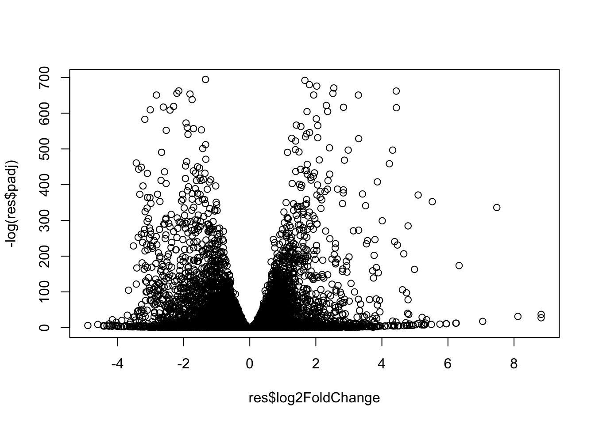

library(DESeq2)RNA-Seq analysis mini-project
Section 1:
metaFile <- "GSE37704_metadata.csv"
countFile <- "GSE37704_featurecounts.csv"colData = read.csv(metaFile, row.names = 1)
head(colData) condition
SRR493366 control_sirna
SRR493367 control_sirna
SRR493368 control_sirna
SRR493369 hoxa1_kd
SRR493370 hoxa1_kd
SRR493371 hoxa1_kdcountData = read.csv(countFile, row.names=1)
head(countData) length SRR493366 SRR493367 SRR493368 SRR493369 SRR493370
ENSG00000186092 918 0 0 0 0 0
ENSG00000279928 718 0 0 0 0 0
ENSG00000279457 1982 23 28 29 29 28
ENSG00000278566 939 0 0 0 0 0
ENSG00000273547 939 0 0 0 0 0
ENSG00000187634 3214 124 123 205 207 212
SRR493371
ENSG00000186092 0
ENSG00000279928 0
ENSG00000279457 46
ENSG00000278566 0
ENSG00000273547 0
ENSG00000187634 258Q1. Complete the code below to remove the troublesome first column from countData
# Note we need to remove the odd first $length col
countData <- as.matrix(countData[,-1])
head(countData) SRR493366 SRR493367 SRR493368 SRR493369 SRR493370 SRR493371
ENSG00000186092 0 0 0 0 0 0
ENSG00000279928 0 0 0 0 0 0
ENSG00000279457 23 28 29 29 28 46
ENSG00000278566 0 0 0 0 0 0
ENSG00000273547 0 0 0 0 0 0
ENSG00000187634 124 123 205 207 212 258Q2. Complete the code below to filter countData to exclude genes (i.e. rows) where we have 0 read count across all samples (i.e. columns). Tip: What will rowSums() of countData return and how could you use it in this context?
zerocounts <- rowSums(countData) == 0
head(zerocounts)ENSG00000186092 ENSG00000279928 ENSG00000279457 ENSG00000278566 ENSG00000273547
TRUE TRUE FALSE TRUE TRUE
ENSG00000187634
FALSE newcounts <- countData[!zerocounts, ]
head(newcounts) SRR493366 SRR493367 SRR493368 SRR493369 SRR493370 SRR493371
ENSG00000279457 23 28 29 29 28 46
ENSG00000187634 124 123 205 207 212 258
ENSG00000188976 1637 1831 2383 1226 1326 1504
ENSG00000187961 120 153 180 236 255 357
ENSG00000187583 24 48 65 44 48 64
ENSG00000187642 4 9 16 14 16 16nrow(newcounts)[1] 159753. Setup and run DESeq:
Already loaded DESeq2 at the begining of the project
dds <- DESeqDataSetFromMatrix(countData = newcounts,
colData = colData,
design = ~condition)Warning in DESeqDataSet(se, design = design, ignoreRank): some variables in
design formula are characters, converting to factorsdds <- DESeq(dds)estimating size factorsestimating dispersionsgene-wise dispersion estimatesmean-dispersion relationshipfinal dispersion estimatesfitting model and testingres <- results(dds)res = results(dds, contrast=c("condition", "hoxa1_kd", "control_sirna"))
reslog2 fold change (MLE): condition hoxa1_kd vs control_sirna
Wald test p-value: condition hoxa1 kd vs control sirna
DataFrame with 15975 rows and 6 columns
baseMean log2FoldChange lfcSE stat pvalue
<numeric> <numeric> <numeric> <numeric> <numeric>
ENSG00000279457 29.9136 0.1792571 0.3248216 0.551863 5.81042e-01
ENSG00000187634 183.2296 0.4264571 0.1402658 3.040350 2.36304e-03
ENSG00000188976 1651.1881 -0.6927205 0.0548465 -12.630158 1.43989e-36
ENSG00000187961 209.6379 0.7297556 0.1318599 5.534326 3.12428e-08
ENSG00000187583 47.2551 0.0405765 0.2718928 0.149237 8.81366e-01
... ... ... ... ... ...
ENSG00000273748 35.30265 0.674387 0.303666 2.220817 2.63633e-02
ENSG00000278817 2.42302 -0.388988 1.130394 -0.344117 7.30758e-01
ENSG00000278384 1.10180 0.332991 1.660261 0.200565 8.41039e-01
ENSG00000276345 73.64496 -0.356181 0.207716 -1.714752 8.63908e-02
ENSG00000271254 181.59590 -0.609667 0.141320 -4.314071 1.60276e-05
padj
<numeric>
ENSG00000279457 6.86555e-01
ENSG00000187634 5.15718e-03
ENSG00000188976 1.76549e-35
ENSG00000187961 1.13413e-07
ENSG00000187583 9.19031e-01
... ...
ENSG00000273748 4.79091e-02
ENSG00000278817 8.09772e-01
ENSG00000278384 8.92654e-01
ENSG00000276345 1.39762e-01
ENSG00000271254 4.53648e-05Q. Call the summary() function on your results to get a sense of how many genes are up or down-regulated at the default 0.1 p-value cutoff.
summary(res)
out of 15975 with nonzero total read count
adjusted p-value < 0.1
LFC > 0 (up) : 4349, 27%
LFC < 0 (down) : 4396, 28%
outliers [1] : 0, 0%
low counts [2] : 1237, 7.7%
(mean count < 0)
[1] see 'cooksCutoff' argument of ?results
[2] see 'independentFiltering' argument of ?resultsplot( res$log2FoldChange, -log(res$padj) )
4. Annotate results:
I need to add annotation to my results including gene symvols and ENTREZ IDs etc. For this I will use the AnnotationDbi package.
library(AnnotationDbi)
library("org.Hs.eg.db")columns(org.Hs.eg.db) [1] "ACCNUM" "ALIAS" "ENSEMBL" "ENSEMBLPROT" "ENSEMBLTRANS"
[6] "ENTREZID" "ENZYME" "EVIDENCE" "EVIDENCEALL" "GENENAME"
[11] "GENETYPE" "GO" "GOALL" "IPI" "MAP"
[16] "OMIM" "ONTOLOGY" "ONTOLOGYALL" "PATH" "PFAM"
[21] "PMID" "PROSITE" "REFSEQ" "SYMBOL" "UCSCKG"
[26] "UNIPROT" res$symbol = mapIds(org.Hs.eg.db,
keys=rownames(res),
keytype="ENSEMBL",
column="SYMBOL",
multiVals="first")'select()' returned 1:many mapping between keys and columnsres$entrez = mapIds(org.Hs.eg.db,
keys=rownames(res),
keytype="ENSEMBL",
column="ENTREZID",
multiVals="first")'select()' returned 1:many mapping between keys and columnshead(res)log2 fold change (MLE): condition hoxa1_kd vs control_sirna
Wald test p-value: condition hoxa1 kd vs control sirna
DataFrame with 6 rows and 8 columns
baseMean log2FoldChange lfcSE stat pvalue
<numeric> <numeric> <numeric> <numeric> <numeric>
ENSG00000279457 29.9136 0.1792571 0.3248216 0.551863 5.81042e-01
ENSG00000187634 183.2296 0.4264571 0.1402658 3.040350 2.36304e-03
ENSG00000188976 1651.1881 -0.6927205 0.0548465 -12.630158 1.43989e-36
ENSG00000187961 209.6379 0.7297556 0.1318599 5.534326 3.12428e-08
ENSG00000187583 47.2551 0.0405765 0.2718928 0.149237 8.81366e-01
ENSG00000187642 11.9798 0.5428105 0.5215599 1.040744 2.97994e-01
padj symbol entrez
<numeric> <character> <character>
ENSG00000279457 6.86555e-01 NA NA
ENSG00000187634 5.15718e-03 SAMD11 148398
ENSG00000188976 1.76549e-35 NOC2L 26155
ENSG00000187961 1.13413e-07 KLHL17 339451
ENSG00000187583 9.19031e-01 PLEKHN1 84069
ENSG00000187642 4.03379e-01 PERM1 84808Q. Finally for this section let’s reorder these results by adjusted p-value and save them to a CSV file in your current project directory.
res = res[order(res$pvalue),]
write.csv(res, file = "deseq_results.csv")plot(res$log2FoldChange, -log(res$padj))
#Pathway Analysis:
library(pathview)
library(gage)
library(gageData)data(kegg.sets.hs)
data(sigmet.idx.hs)
# Focus on signaling and metabolic pathways only
kegg.sets.hs = kegg.sets.hs[sigmet.idx.hs]foldchanges = res$log2FoldChange
names(foldchanges) = res$entrez
head(foldchanges) 1266 54855 1465 51232 2034 2317
-2.422719 3.201955 -2.313738 -2.059631 -1.888019 -1.649792 Run gage:
# Get the results:
keggres = gage(foldchanges,gsets = kegg.sets.hs)head(keggres$less) p.geomean stat.mean p.val
hsa04110 Cell cycle 8.995727e-06 -4.378644 8.995727e-06
hsa03030 DNA replication 9.424076e-05 -3.951803 9.424076e-05
hsa03013 RNA transport 1.375901e-03 -3.028500 1.375901e-03
hsa03440 Homologous recombination 3.066756e-03 -2.852899 3.066756e-03
hsa04114 Oocyte meiosis 3.784520e-03 -2.698128 3.784520e-03
hsa00010 Glycolysis / Gluconeogenesis 8.961413e-03 -2.405398 8.961413e-03
q.val set.size exp1
hsa04110 Cell cycle 0.001448312 121 8.995727e-06
hsa03030 DNA replication 0.007586381 36 9.424076e-05
hsa03013 RNA transport 0.073840037 144 1.375901e-03
hsa03440 Homologous recombination 0.121861535 28 3.066756e-03
hsa04114 Oocyte meiosis 0.121861535 102 3.784520e-03
hsa00010 Glycolysis / Gluconeogenesis 0.212222694 53 8.961413e-03Look at the first few down (less) pathway
pathview(gene.data = foldchanges, pathway.id = "hsa04110")'select()' returned 1:1 mapping between keys and columnsInfo: Working in directory /Users/rogeliocastro/Documents/Classes UCSD/BIMM 143/RNA-Seq_Mini-ProjectInfo: Writing image file hsa04110.pathview.png